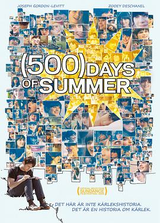

和莎莫的500天 / (500) Days of Summer
又名：心跳(500)天(港) / 恋夏(500日)(台) / 初恋500天 / 与萨莫的500天 / 仲夏(500)天 / 500 Days of Summer
作品信息
| 导演 | 马克·韦布 |
| 编剧 | 斯科特·纽斯塔德 / 迈克尔·H·韦伯 |
| 主演 | 约瑟夫·高登-莱维特 / 佐伊·丹斯切尔 / 吉奥弗瑞·阿伦德 / 科洛·葛蕾丝·莫瑞兹 / 马修·格雷·古柏勒 / 克拉克·格雷格 / 帕特里夏·贝尔彻 / 瑞秋·波士顿 / 敏卡·凯利 / Charles Walker / 伊安·瑞德·科斯勒 / 维勒特·罗德里格斯 / 伊薇特·尼科尔·布朗 / 妮科尔·维丘什 / 麦丽·弗拉纳甘 / 西德·威尔纳 / 理查德·麦克格纳格尔 / 让-保罗·维尼翁 / 苏比尔·阿祖尔 / 盖斯·卡尔 / 娜丁·埃利斯 / 蒂凡妮·格拉纳斯 / 布兰登·亨舍尔 / 莱克茜·休姆 / 詹妮弗·李·凯耶斯 / 蒂姆·拉卡特纳 / 瑞贝卡·林 / 安东尼·马西奥纳 / 瑞恩·托马斯 / 克里斯蒂安·文森特 / 朱尔·韦伯 / 奥利维亚·霍华德·巴基 / 约瑟夫·巴特勒 / 亚当·埃默里 / 詹妮弗·赫特里克 / 迈克尔·贾斯蒂斯 / 凯文·梁 / 米歇尔·梅森 / 艾伦·汤普森 / 裴蕾森特·维恩 / 凯瑟琳·维斯拜克 / 乔恩·摩根·伍德沃德 |
| 类型 | 剧情 / 喜剧 / 爱情 |
| 制片国家/地区 | 美国 |
| 语言 | 英语 / 法语 / 瑞典语 |
| 上映日期 | 2009-01-17(圣丹斯电影节) / 2009-08-07(美国) |
| 片长 | 95分钟 |
| IMDb | tt1022603 |
说过什么
2020-09-04 08:55:43
广播 · 想看
最后一次看到是 2026-08-01T11:09:11+10:00 · 豆瓣原页